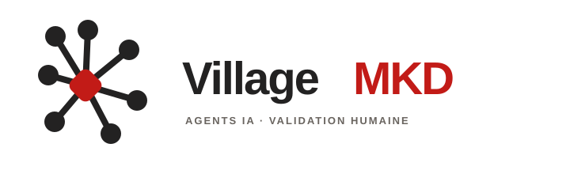
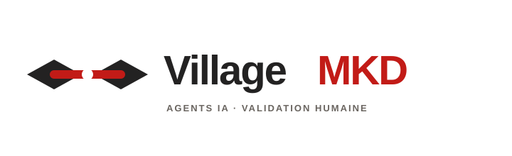
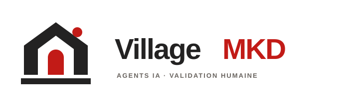
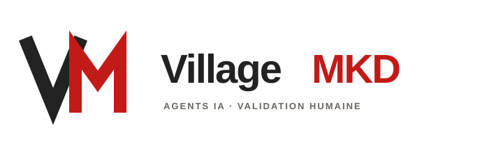

01
Archipel humain

Sept fonctions réunies autour d’un point de décision humain. Le système le plus directement lié à la carte du produit.
Réseau · collectifCinq pistes de logo pour un collectif d’agents IA qui travaille en village et laisse la validation finale à une personne. Les formes sont dessinées pour rester lisibles en petit et en monochrome.

Sept fonctions réunies autour d’un point de décision humain. Le système le plus directement lié à la carte du produit.
Réseau · collectif
Deux îles reliées par une passerelle rouge avec un repère au centre : le passage entre production et validation.
Lien · passage
Un lieu commun identifiable, avec une entrée ouverte et un repère rouge pour l’étape de revue humaine.
Lieu · confiance
Une signature compacte issue des initiales, pensée pour l’icône d’application et les emplacements très étroits.
Initiales · icôneUne place entourée de sept abris : l’idée d’un village où chaque spécialité contribue à une même production.
Village · coopération